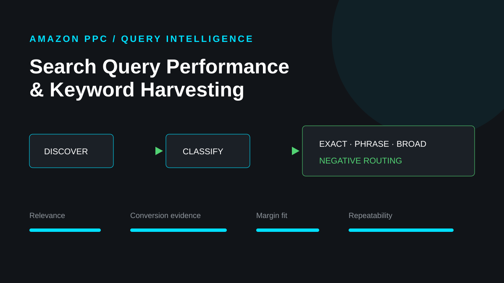
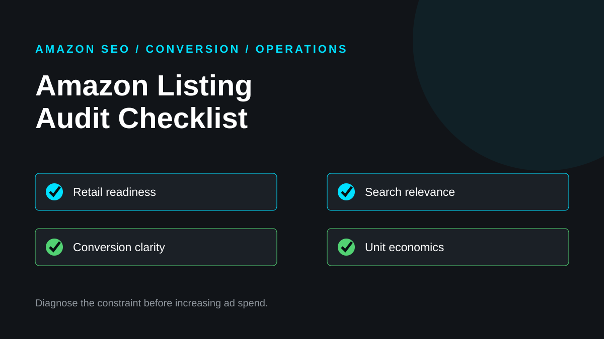
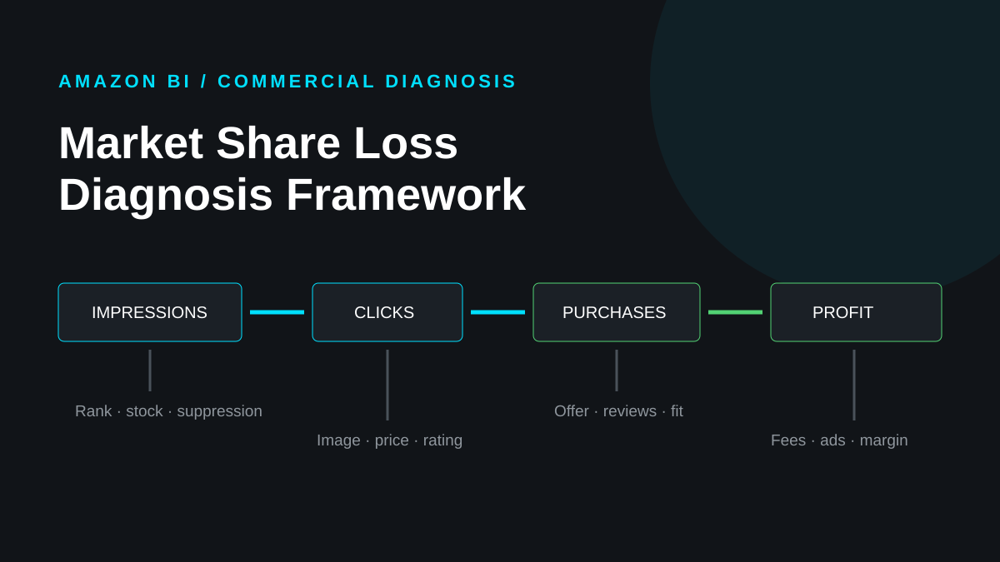
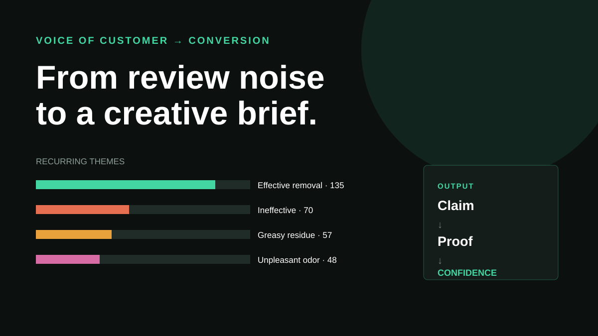

Artículos
Un repositorio de notas técnicas, estudios de casos aplicados y marcos operativos en torno a Amazon PPC, análisis de comercio electrónico y crecimiento del mercado.
Biblioteca de casos

Caso de separación del día
Cómo los datos horarios de PPC pueden revelar fugas presupuestarias, proteger ventanas de alta conversión y convertir la programación de ofertas en un sistema de asignación de capital.
Supresión de búsqueda y recuperación de catálogos
Una guía de campo respaldada por datos para separar los errores de envío, capacidad de compra, capacidad de descubrimiento, atributos, restricciones e indexación antes de validar la recuperación.

Compatible con SEO para listados de automóviles
Un sistema basado en evidencia para conectar especificaciones de piezas, registros de aplicaciones, excepciones, atributos Amazon e idioma de búsqueda sin exagerar la compatibilidad.

Rendimiento de consultas de búsqueda y recolección de palabras clave
Cómo convertir las señales de consulta del mercado y la evidencia de términos de búsqueda en decisiones controladas de palabras clave exactas, de frase, amplias y negativas.

Lista de verificación de auditoría de listado Amazon
Una auditoría de dependencia para diagnosticar la preparación, relevancia, conversión, estado del catálogo y rentabilidad del comercio minorista antes de aumentar la inversión publicitaria.

Marco de diagnóstico de pérdida de participación de mercado
Un marco causal para separar los efectos de visibilidad, porcentaje de clics, conversión, precios, inventario, competencia, publicidad y ganancias.

Del ruido de la reseña al informe de conversión
Un caso de investigación anónimo que muestra cómo los resultados recurrentes, las objeciones y los escenarios de uso se convierten en un plan de contenido de mercado defendible.